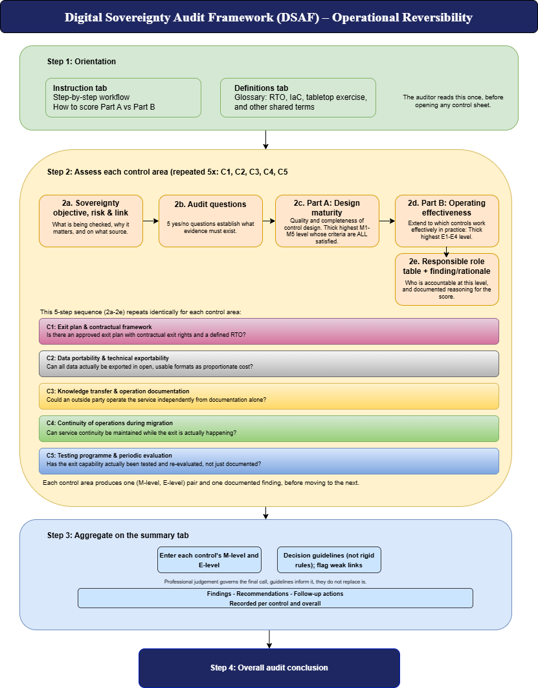

Open Source · Audit Framework
A structured way to assess whether an organization can exit its current cloud provider arrangement without catastrophic loss of continuity, data, or institutional knowledge.
This form can be used to assess whether an organization can exit its current cloud provider arrangement without catastrophic loss of continuity, data, or institutional knowledge.
“Can a third party take over the service upon provider failure or contract termination, based on available documentation and design?” — DICTU Toetsingsinstrument (2026), Criterion 3.4
“A contractually binding exit plan is mandatory.” — EuroStack Framework (2025), Criterion 2.3
The form covers all five control areas. The audit questions — the numbered Yes/No questions — are the starting point: they define what the auditor must verify. All five control areas are assessed on two dimensions: design maturity (whether the control is designed to achieve its objective) and operating effectiveness (whether the designed control actually operated as intended during the audit period).
Each control area is scored independently on design maturity (M1–M5) and operating effectiveness (E1–E4), then rolled up into an overall conclusion on the Summary tab.
Verifies that a formally approved, contractually supported exit plan exists, enabling an orderly transition to an alternative provider within a defined Recovery Time Objective (RTO).
Verifies that all data — primary data, backups, configurations, metadata, and logs — can be exported at any time in open, non-proprietary formats at proportionate cost.
Verifies that the cloud environment is documented in sufficient detail for a competent third party to assume full operational control within the exit RTO.
Verifies that the exit plan contains a migration continuity plan: phases, parallel operation, data synchronization, degradation tolerance, and rollback procedure.
Verifies that exit capability is subject to a structured, periodic test programme, with findings tracked to remediation and reported to senior management.
A level applies only if every cumulative criterion at that level is satisfied. Part A and Part B are scored independently and never averaged together.
The auditor reads the Instructions and Definitions tabs once, then repeats a five-step sequence for each of the five control areas before aggregating results on the Summary tab.

A ready-to-use Excel workbook: Instructions, Definitions, five control-area sheets (C1–C5), and an auto-calculated Summary tab.
DSAF is released as open source so any organization can adopt, adapt, and redistribute it freely.
Free to use, copy, modify, and distribute — including for commercial audits — provided the copyright notice is retained. See LICENSE for the full text.
git clone https://github.com/zaynab-m/DSAF.git